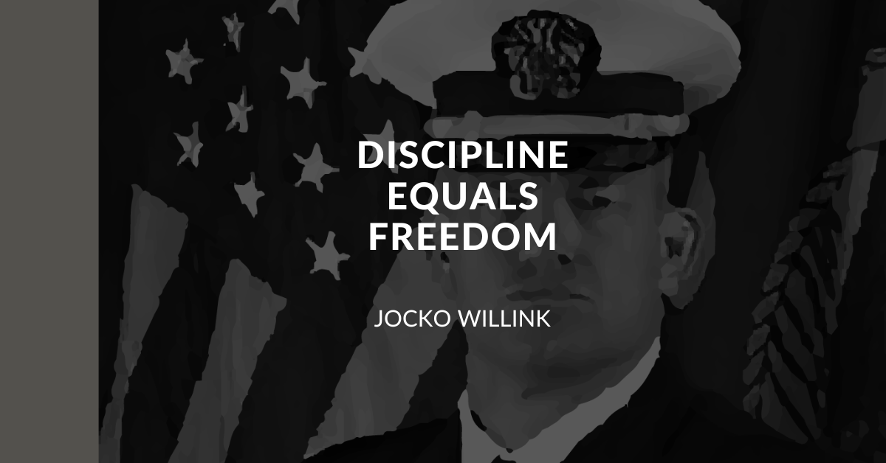

Discipline and freedom are two concepts that, although they may seem contradictory, actually complement each other. Freedom represents the ability to act without constraints, to autonomously choose one’s goals and the means to achieve them. Discipline, on the other hand, can be considered an essential tool to gain and preserve freedom. For example, learning to read and write — a disciplined and repetitive act — allows us to access knowledge, develop critical thinking, and freely express our ideas. It is precisely through discipline, made of commitment, effort, and sacrifice, that we can be proud of our achievements and, above all, free to fulfill what we desire.
Some concrete examples:
- A child who learns to respect the rules of a game (discipline) can enjoy the freedom of playing with others and building positive social relationships.
- A citizen who observes laws and civil norms (discipline) contributes to an orderly society where everyone can enjoy freedom of expression, movement, and thought.
In summary, discipline does not limit freedom, but makes it possible and sustainable. Only through internalized rules and responsible behavior can we aspire to true and lasting freedom.
